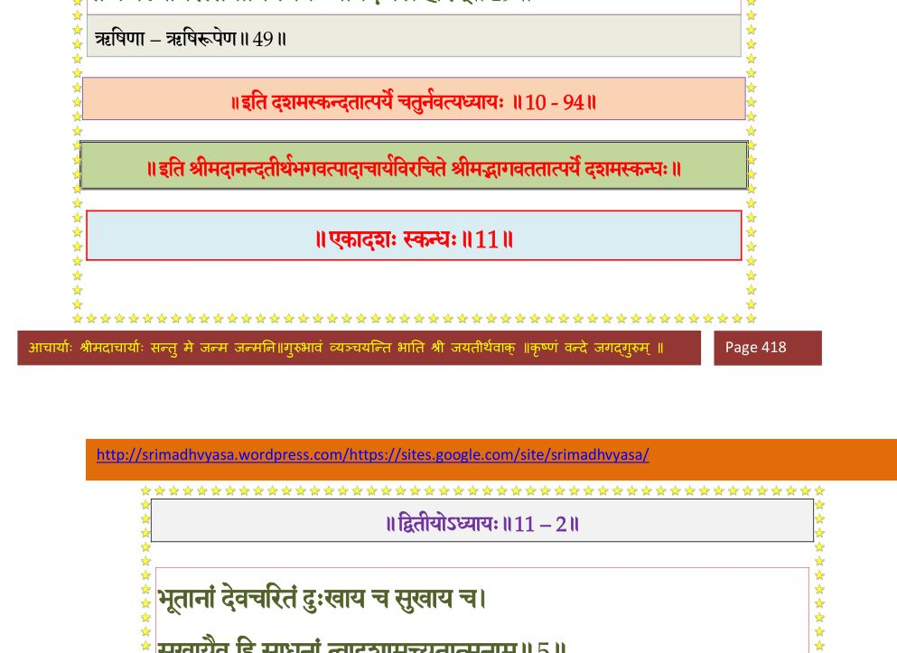

स्कन्ध 10 · अध्याय 105
श्लोक १
श्रीशुक उवाच—
एवं वेदोदितं धर्ममनुतिष्ठन् सतां गतिः ।
गृहं धर्मार्थकामानां मुहुः सन्दर्शयन् पदम्।। १ ।।
एवं वेदोदितं धर्ममनुतिष्ठन् सतां गतिः ।
गृहं धर्मार्थकामानां मुहुः सन्दर्शयन् पदम्।। १ ।।
श्लोक २
एवं शासति भूचक्रं चक्रपाणौ जनार्दने ।
द्वारका वृष्णिनिलया योजनद्वादशायुता।। २ ।।
द्वारका वृष्णिनिलया योजनद्वादशायुता।। २ ।।
श्लोक ३
मुनिभिर्ब्राह्मणैश्चैव क्षत्रियैश्चापि वन्दिभिः ।
आसीत् पूर्णा कुुरुश्रेष्ठ सततं समलङ्कृता।। ३ ।।
आसीत् पूर्णा कुुरुश्रेष्ठ सततं समलङ्कृता।। ३ ।।
श्लोक ४
पिण्डारकात् कुरुक्षेत्रात् सालग्रामाच्च पुष्करात् ।
वाराणस्याः प्रयागाच्च वेङ्कटाच्छ्रीगिरेरपि।। ४ ।।
वाराणस्याः प्रयागाच्च वेङ्कटाच्छ्रीगिरेरपि।। ४ ।।
श्लोक ५
स्यानन्दूराच्च गोकर्णाच्चन्द्रतीर्थाच्च शोभनात् ।
सह्याद्रेश्च भृगुक्षेत्रात् कुमारनिलयादपि।। ५ ।।
सह्याद्रेश्च भृगुक्षेत्रात् कुमारनिलयादपि।। ५ ।।
श्लोक ६
गोदावरीताटात् पुण्यान्नर्मदानिकटादपि ।
शूर्पाकारात् प्रभासाच्च पुण्याद् बदरिकाश्रमात्।। ६ ।।
शूर्पाकारात् प्रभासाच्च पुण्याद् बदरिकाश्रमात्।। ६ ।।
श्लोक ७
पावनान्नैमिषारण्याद् ब्रह्मदुर्गाच्च दुर्गमात् ।
आययुर्मुनयः शान्ता नित्यव्रतपरायणाः।। ७ ।।
आययुर्मुनयः शान्ता नित्यव्रतपरायणाः।। ७ ।।
श्लोक ८
अब्भक्षा वायुभक्षाश्च निराहारा दृढव्रताः ।
वल्कलाजिनसंवीता जटिनश्चापि मुण्डिनः।। ८ ।।
वल्कलाजिनसंवीता जटिनश्चापि मुण्डिनः।। ८ ।।
श्लोक ९
त्रिकालस्नायिनश्चैव मौनव्रतपरायणाः ।
वेदस्वाध्यायनिरताः स्तुतिस्तोत्रपरायणाः।। ९ ।।
वेदस्वाध्यायनिरताः स्तुतिस्तोत्रपरायणाः।। ९ ।।
श्लोक १०
ध्यानैकतानमनसः समाधौ कृतनिश्चयाः ।
त्वगस्थिमात्रावयवाः शिराधमनिसन्तताः।। १० ।।
त्वगस्थिमात्रावयवाः शिराधमनिसन्तताः।। १० ।।
श्लोक ११
आगत्य मुनयो राजन् सर्वतः शान्तचेतसः ।
उपासत महाराज नित्यं तत्त्वैकचिन्तकाः।। ११ ।।
उपासत महाराज नित्यं तत्त्वैकचिन्तकाः।। ११ ।।
श्लोक १२
क्षत्रियैश्च महावीर्यैर्ब्राह्मणैश्च तपोधनैः ।
सूतैश्च मागधैश्चैव श्लोकस्तुतिपरायणैः।। १२ ।।
सूतैश्च मागधैश्चैव श्लोकस्तुतिपरायणैः।। १२ ।।
श्लोक १३
पूर्णमङ्गलघोषैश्च वादित्राणां च निःस्वनैः ।
निर्घुष्टा ब्रह्मघोषैश्च द्वारका कुरुनन्दन।। १३ ।।
निर्घुष्टा ब्रह्मघोषैश्च द्वारका कुरुनन्दन।। १३ ।।
श्लोक १४
क्षेत्राणामपि सर्वेषां तीर्थानां चाघहारिणाम् ।
देवदेवस्य सान्निध्यादग्रण्या च बभूव सा।। १४ ।।
देवदेवस्य सान्निध्यादग्रण्या च बभूव सा।। १४ ।।
श्लोक १५
आस्थितस्य परं धर्मं कृष्णस्य गृहमेधिनः ।
आसन् षोडशसाहस्रमहिष्यस्तु शताधिकाः।। १५ ।।
आसन् षोडशसाहस्रमहिष्यस्तु शताधिकाः।। १५ ।।
श्लोक १६
तासां स्त्रीरत्नभूतानामष्टौ याः प्रागुदाहृताः ।
रुग्मिणीप्रमुखा राजन् तत्पुत्राश्चानुपूर्वशः।। १६ ।।
रुग्मिणीप्रमुखा राजन् तत्पुत्राश्चानुपूर्वशः।। १६ ।।
श्लोक १७
एकैकस्यां दशदश कृष्ण•ऽजीजनदात्मजान् ।
यावत्य आत्मनो भार्यास्त्वमोघगतिरीश्वरः।। १७ ।।
यावत्य आत्मनो भार्यास्त्वमोघगतिरीश्वरः।। १७ ।।
श्लोक १८
तेषामुद्दामवीर्याणामष्टादश महारथाः ।
आसन्नुदारयशसस्तेषां नामानि मे शृणु।। १८ ।।
आसन्नुदारयशसस्तेषां नामानि मे शृणु।। १८ ।।
श्लोक १९
प्रद्युम्नश्चारुदेष्णश्च दीप्तिमान् भानुरेव च ।
साम्बो मित्रबृहद्भा(नू)नुर्भानुविन्दो वृकोऽरुणः।। १९ ।।
साम्बो मित्रबृहद्भा(नू)नुर्भानुविन्दो वृकोऽरुणः।। १९ ।।
श्लोक २०
पुष्करो देवभानुश्च श्रुतदेवः सुनन्दनः ।
चित्रभानुर्वरूथश्च कविर्न्यग्रोध एव च।। २० ।।
चित्रभानुर्वरूथश्च कविर्न्यग्रोध एव च।। २० ।।
श्लोक २१
त्रिवक्राया विशोकश्च पुत्रः कृष्णमनुव्रतः ।
आसीच्छिष्यो नारदस्य ददौ चित्तमखण्डितम्।। २१ ।।
आसीच्छिष्यो नारदस्य ददौ चित्तमखण्डितम्।। २१ ।।
श्लोक २२
येनोक्तं सात्वतं तन्त्रं यज्ज्ञात्वा मूर्तिमान् भवेत् ।
यत्र स्त्रीशूद्रदाशानां संस्कारो वैष्णवः स्मृतः।। २२ ।।
यत्र स्त्रीशूद्रदाशानां संस्कारो वैष्णवः स्मृतः।। २२ ।।
श्लोक २३
एतेषामपि राजेन्द्र तनुजानां मधुद्विषः ।
प्रद्युम्न आसीत् प्रथमः पितृवद् रुग्मिणीसुतः।। २३ ।।
प्रद्युम्न आसीत् प्रथमः पितृवद् रुग्मिणीसुतः।। २३ ।।
श्लोक २४
स रुग्मिणो दुहितरमुपयेमे महारथः ।
तस्यां ततोऽनिरुद्धोऽभून्नागायुतबलान्वितः।। २४ ।।
तस्यां ततोऽनिरुद्धोऽभून्नागायुतबलान्वितः।। २४ ।।
श्लोक २५
स चापि रुग्मिणः पौत्रीं दौहित्रो जगृहे ततः ।
वज्रस्तस्यामभूद् यस्तु मौसलादवशेषितः।। २५ ।।
वज्रस्तस्यामभूद् यस्तु मौसलादवशेषितः।। २५ ।।
श्लोक २६
प्रतिबाहुरभूत् तस्मात् सुबाहुस्तस्य चात्मजः ।
सुबाहोरुग्रसेनोऽभूच्छतसेनस्तु तत्सुतः।। २६ ।।
सुबाहोरुग्रसेनोऽभूच्छतसेनस्तु तत्सुतः।। २६ ।।
श्लोक २७
न ह्येतस्मिन् कुले जाता अधना अबहुप्रजाः ।
अल्पायुषोऽल्पवीर्या वा अब्रह्मण्याश्च जज्ञिरे।। २७ ।।
अल्पायुषोऽल्पवीर्या वा अब्रह्मण्याश्च जज्ञिरे।। २७ ।।
श्लोक २८
यदुवंशे प्रसूतानां पुंसां विख्यातकर्मणाम् ।
सङ्ख्या न शक्यते कर्तुमपि वर्षायुतैर्नृप।। २८ ।।
सङ्ख्या न शक्यते कर्तुमपि वर्षायुतैर्नृप।। २८ ।।
श्लोक २९
तिस्त्रः कोट्यः सहस्राणामष्टाशीतिशतानि च ।
आसन् यदुकुमाराणामाचार्या इति नः श्रुतम्।। २९ ।।
आसन् यदुकुमाराणामाचार्या इति नः श्रुतम्।। २९ ।।
श्लोक ३०
सङ्ख्यानं यादवानां कः करिष्यति महात्मनाम् ।
यत्रायुतानामयुतं रक्षन्नास्ते स आहुकः।। ३० ।।
यत्रायुतानामयुतं रक्षन्नास्ते स आहुकः।। ३० ।।
श्लोक ३१
देवासुराहवहता ये दैतेयाः सुदारुणाः ।
ते चोत्पन्ना मनुष्येषु प्रजा दृप्ता बबाधिरे।। ३१ ।।
ते चोत्पन्ना मनुष्येषु प्रजा दृप्ता बबाधिरे।। ३१ ।।
श्लोक ३२
तन्निग्रहाय हरिणा प्रोक्ता देवा यदोः कुले ।
अवतीर्णाः कुलशतं येषामेकाधिकं नृप।। ३२ ।।
अवतीर्णाः कुलशतं येषामेकाधिकं नृप।। ३२ ।।
श्लोक ३३
तेषां प्रमाणं भगवान् प्रभुत्वे चाभवद् हरिः ।
ये चानुवर्तिनस्तस्य ववृधुः सर्वयादवाः।। ३३ ।।
ये चानुवर्तिनस्तस्य ववृधुः सर्वयादवाः।। ३३ ।।
श्लोक ३४
शय्यासनाटनालापक्रीडास्नानाशनादिषु ।
न विदुः सन्तमात्मानं वृष्णयः कृष्णचेतसः।। ३४ ।।
न विदुः सन्तमात्मानं वृष्णयः कृष्णचेतसः।। ३४ ।।
श्लोक ३५
ईजे क्रतुभिरात्मानं सर्ववेदार्थसङ्ग्रहम् ।
स्वयोगमायारचितैः कुरुक्षेत्रे द्विषट्समाः।। ३५ ।।
स्वयोगमायारचितैः कुरुक्षेत्रे द्विषट्समाः।। ३५ ।।
श्लोक ३६
कृष्णगाध्यसितावन्तिरामाचार्योद्धवेश्वरः ।
दीक्षितोऽग्रण्यपत्नीभिः पुण्यश्लोकः सहाग्रणीः।। ३६ ।।
दीक्षितोऽग्रण्यपत्नीभिः पुण्यश्लोकः सहाग्रणीः।। ३६ ।।
श्लोक ३७
तीर्थं चक्रे नृणां यो यदजनि यदुषु स्वःसरित् पादशौचं
षड्भिश्चाप्तं स्वरूपं पर उरसि रमा सर्वदा यस्य चास्ते ।
यच्छास्त्रं तत्प्रमाणं यदनु च सदसव्द्यक्तयो यत्र धर्माः
कृष्णस्यैतन्न चित्रं क्षितिभरहरणं कालचक्रायुधस्य।। ३७ ।।
षड्भिश्चाप्तं स्वरूपं पर उरसि रमा सर्वदा यस्य चास्ते ।
यच्छास्त्रं तत्प्रमाणं यदनु च सदसव्द्यक्तयो यत्र धर्माः
कृष्णस्यैतन्न चित्रं क्षितिभरहरणं कालचक्रायुधस्य।। ३७ ।।
श्लोक ३८
जयति जननिवासो देवकीजन्मवादो
नियमकृतपदाब्जैर्दस्युपीडां स्वदोर्भिः ।
मुदमुभयदृशीनां श्रीनिकेतात्ममूर्त्या
स्मरवपुरबलानां स्निग्धहासेक्षया च।। ३८ ।।
नियमकृतपदाब्जैर्दस्युपीडां स्वदोर्भिः ।
मुदमुभयदृशीनां श्रीनिकेतात्ममूर्त्या
स्मरवपुरबलानां स्निग्धहासेक्षया च।। ३८ ।।
श्लोक ३९
यो ह्यात्मा जगदादिमध्यनिधनो योऽव्यक्तजीवेश्वरो
यः सृष्ट्वेदमनुप्रविष्ट ऋषिणा चक्रे पुनः संहिताम् ।
यं सम्पद्य जहात्यजामनुशयी सुप्तः कुलायं यथा
तं कैवल्यनिरस्तयोनिमभयं ध्यायेदजस्रं हरिम्।। ३९ ।।
यः सृष्ट्वेदमनुप्रविष्ट ऋषिणा चक्रे पुनः संहिताम् ।
यं सम्पद्य जहात्यजामनुशयी सुप्तः कुलायं यथा
तं कैवल्यनिरस्तयोनिमभयं ध्यायेदजस्रं हरिम्।। ३९ ।।
भागवततात्पर्यनिर्णय

।। इति श्रीमद्भागवते दशमस्कन्धे पञ्चाधिकशततमोऽध्यायः ।।